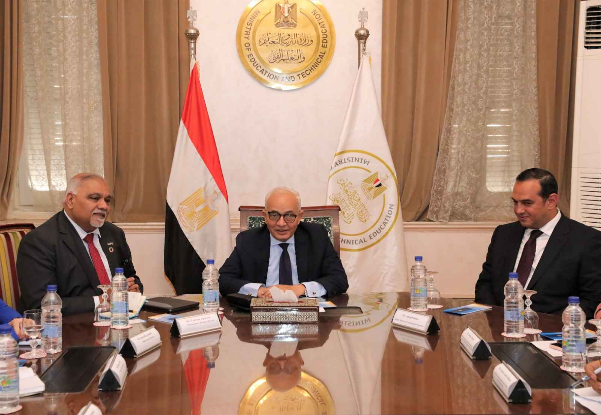

التربوي
نيرة خالد - هاجر يونس - ياسمين ياسر - مهرائيل عادل - روان ماهر
وزير التربية والتعليم يلتقي مدير مكتب برنامج الأغذية العالمي لمناقشة أوجه التعاون المشترك

التقى الدكتور رضا حجازى وزير التربية والتعليم والتعليم الفنى، برافين اجراوال، ممثل برنامج الأغذية العالمى التابع للأمم المتحدة فى مصر؛ لمناقشة أوجه التعاون بين الوزارة وبرنامج الغذاء العالمى فى المرحلة المقبلة.
جاء ذلك بحضور، روسلا فانيلي نائب ممثل ومدير برنامج الأغذية العالمى، ودعاء عرفة مسئول برنامج وسياسات ومدير الحماية الاجتماعية، ومحمد بدران رئيس قسم الرقمنة والابتكار، والدكتور أحمد ضاهر نائب الوزير للتطوير التكنولوجي، والدكتورة شيرين حمدي مستشار الوزير للتطوير الإداري والمشرف على الإدارة المركزية لشئون مكتب الوزير، وخالد عبد الحكم رئيس الإدارة المركزية للحد من التسرب التعليمى.
ورحب الدكتور الوزير بالحضور، مشيدًا بتعاون برنامج الأغذية العالمى مع وزارة التربية والتعليم والتعليم الفني فى العديد من المجالات، ووجه الشكر لبرنامج الأغذية العالمي، على المجهودات الدائمة لدعم المدارس المجتمعية، فضلاً عن برنامج التغذية المدرسية، مؤكدًا تطلعه للمزيد من التعاون، من خلال تطوير البرامج القائمة واستحداث برامج جديدة.
وأكد الدكتور رضا حجازى، أن التعاون مستمر فى عملية تعزيز التعليم داخل المدارس، موضحًا أن الوزارة تعمل على محور الإتاحة وكذلك الحد من التسرب لسد منابع الأمية وإعطاء فرصة للطلاب المتسربين من التعليم للالتحاق بالتعليم من خلال مدارس التعليم المجتمعي.
ومن جانبه، أعرب برافين أجراوال ممثل برنامج ومدير مكتب برنامج الأغذية العالمي في مصر، عن سعادته بالتعاون مع وزارة التربية والتعليم والتعليم الفني، كونها شريكًا قويًا للحكومة المصرية في تنفيذ البرامج التي تتماشى مع رؤية مصر لعام 2030، مؤكدًا تقديم كافة أوجه الدعم للوزارة، وخاصةً للأطفال فى المجتمعات الأكثر احتياجًا.
وقد ناقش الاجتماع استعراض الخطة الخمسية الجديدة التى بصدد إعدادها برنامج الأغذية العالمى والتى تدعم المبادرات الناجحة والتعاون مع الوزارة خلال السنوات الخمسة المقبلة، والتركيز على التغذية السليمة للأطفال داخل المدارس المجتمعية، وتغير العادات الغذائية السيئة فى المنزل.
وتم خلال الاجتماع استعراض التعاون المشترك بين وزارة التربية والتعليم والتعليم الفني بالشراكة مع برنامج الأغذية العالمى، حيث تم تطوير البنية التكنولوجية لعدد 500 مدرسة مجتمعية، وتقديم الخبرات والتدريب لمعلمين هذه المدارس، والتأكيد على وضع خطة لتوسيع نطاق التعاون لاستكمال التطوير فى هذه المدارس.